Joo-Yup Lee, PhD
Историк Центральной Евразии и тюркского мира
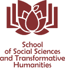
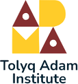
Наследие Великой степи и современные решения
30–31 октября 2026 · Алматы, Казахстан
Almaty Management University приглашает вас 30–31 октября 2026 года в Алматы на международную конференцию ALMAU – TOLYQ ADAM 2026. Это пространство академического и профессионального диалога о миссии университета в условиях технологических, социальных и культурных изменений.
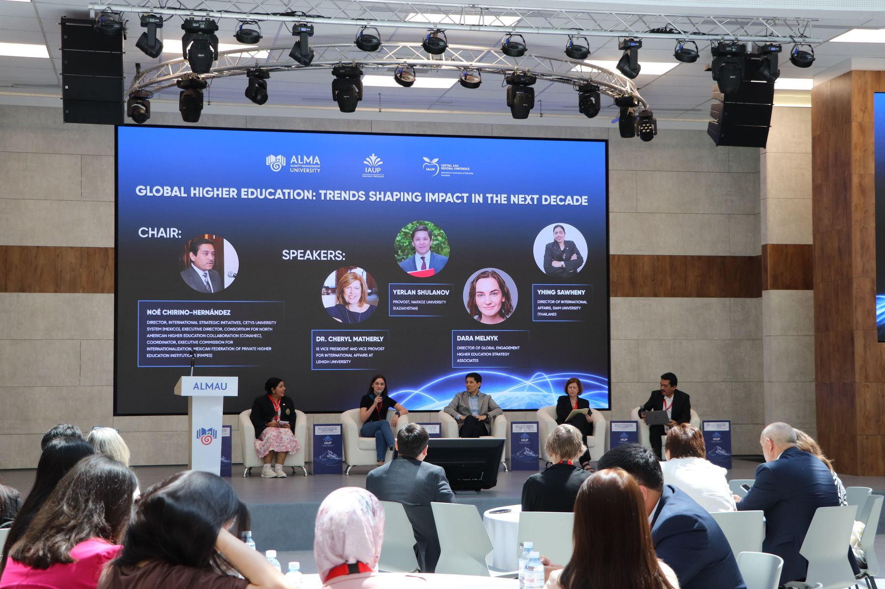
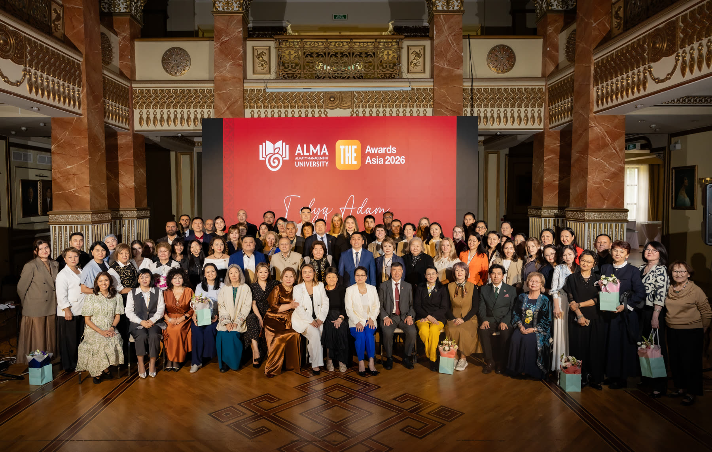
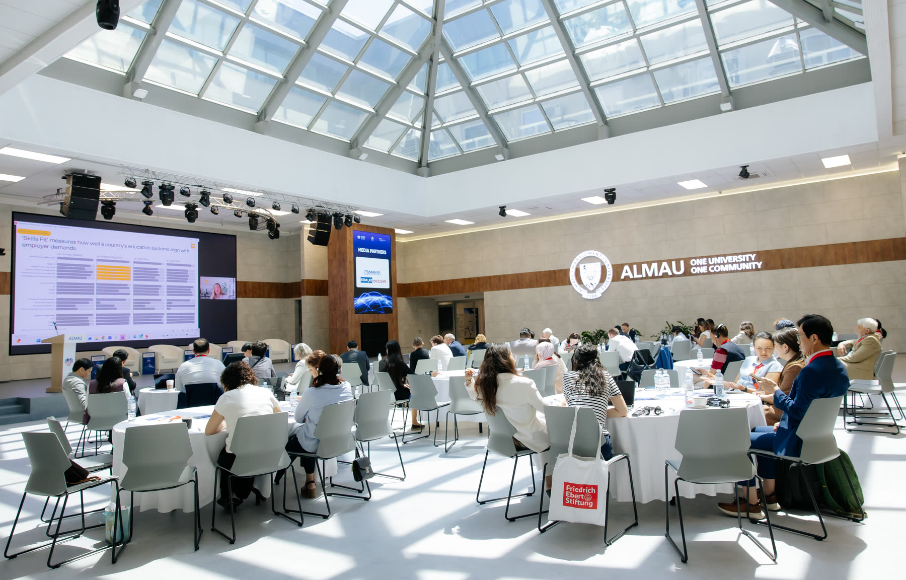
Международная конференция AlmaU – TOLYQ ADAM 2026 посвящена презентации образовательной модели TOLYQ ADAM, реализуемой в Almaty Management University с 2023 года. Основанная на философии Абая о гармонии разума, сердца и воли, модель объединяет взаимосвязанные дисциплины и образовательные практики, направленные на целостное развитие личности студента — критическое и творческое мышление, осознанный выбор, самоорганизацию, эмоциональный интеллект, коммуникацию, командную работу, социальную ответственность и культуру служения обществу.
На конференции AlmaU впервые представит TOLYQ ADAM широкому академическому сообществу как целостную образовательную модель — её концептуальные основания, архитектуру, содержание, методические подходы и опыт реализации. Презентация будет дополнена диалогом с интеллектуальным наследием Великой степи и международными практиками whole-person и holistic education, что позволит обсудить, как развитие целостной личности может быть системно встроено в университетское образование.
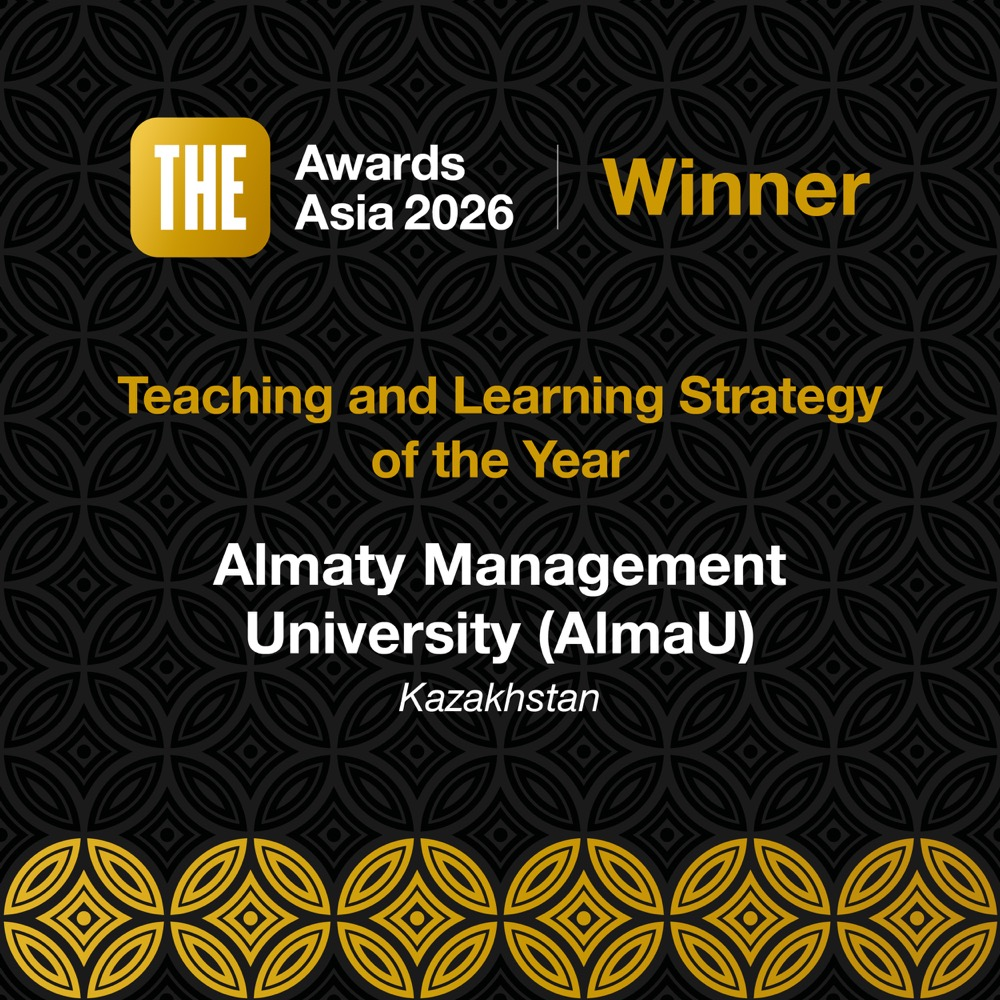
Образовательная программа Tolyq Adam университета AlmaU стала победителем THE Awards Asia 2026 в номинации «Стратегия преподавания и обучения года».
Историк Центральной Евразии и тюркского мира
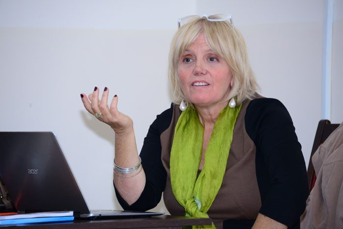
Историк Центральной Азии, профессор INALCO
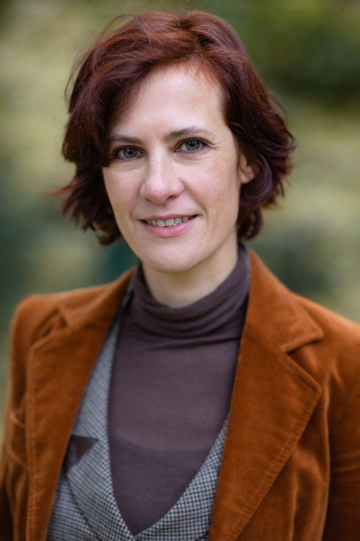
Историк Золотой Орды и кочевых империй
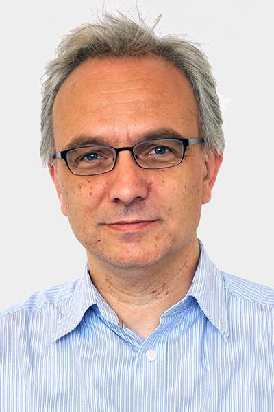
Профессор социальной антропологии, University of Zurich
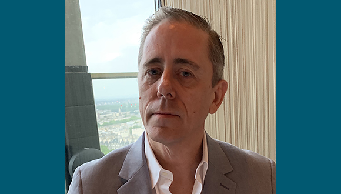
Исследователь критической педагогики, University of the Arts London
Культуролог, профессор практики AlmaU
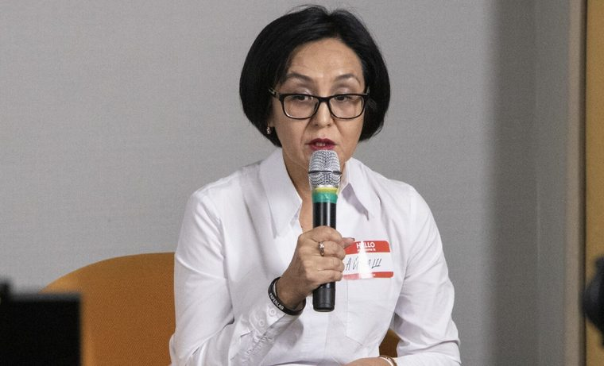
Исследователь кочевой цивилизации и культурного наследия
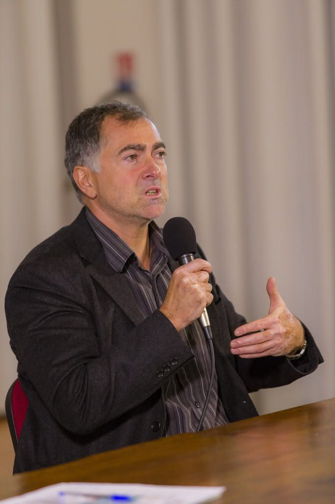
Профессор философии, Aix-Marseille Université
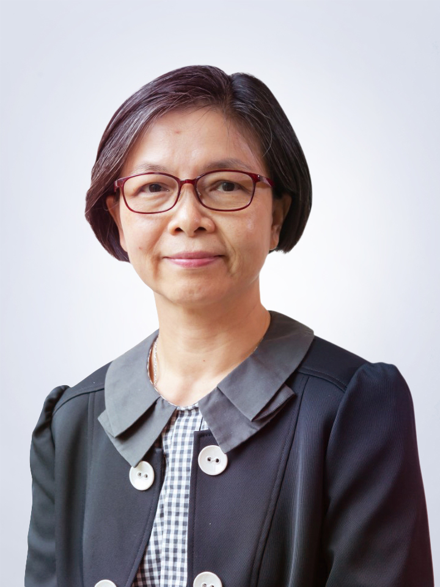
Профессор китайского языка, The Education University of Hong Kong
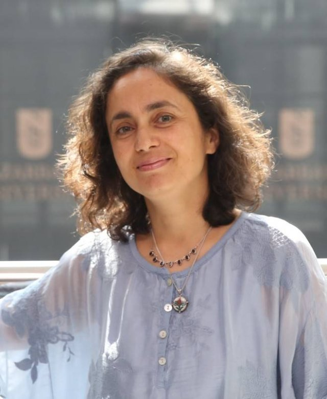
Профессор предпринимательства, Nazarbayev University
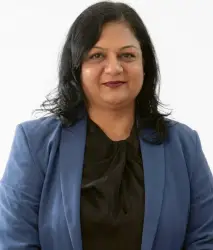
Руководитель академических программ, Symbiosis International University
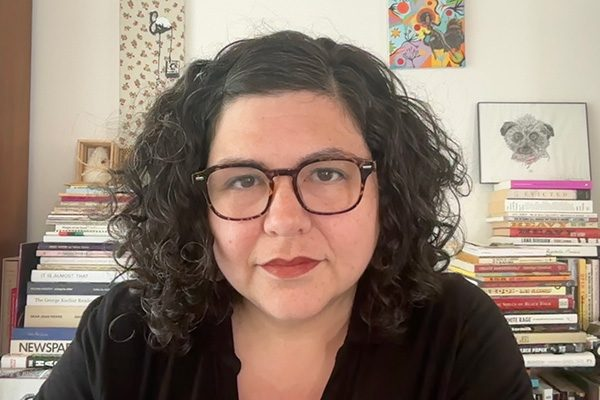
Представитель Bard College, эксперт в области Liberal Arts
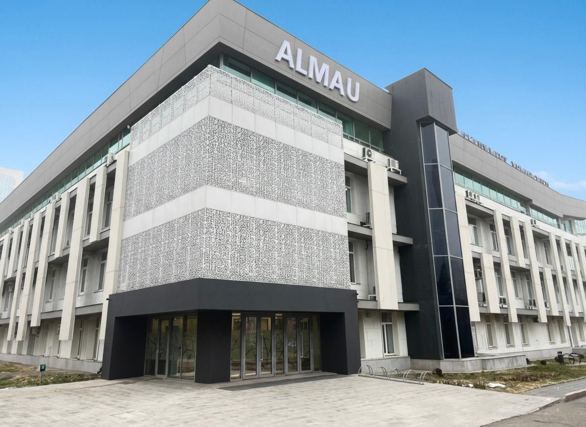